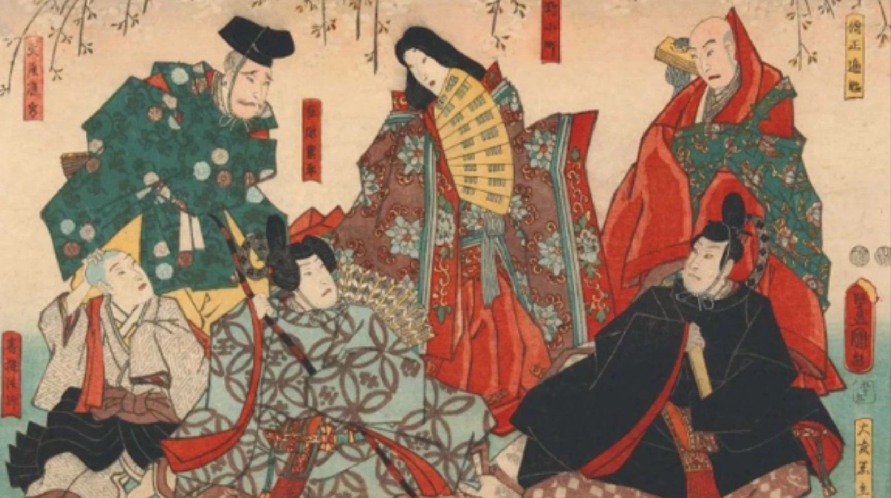
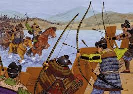
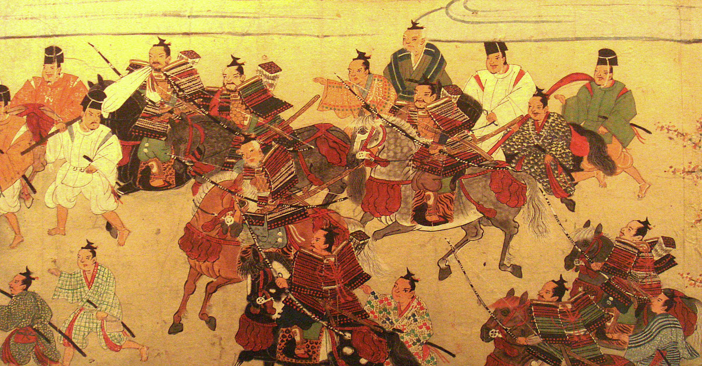
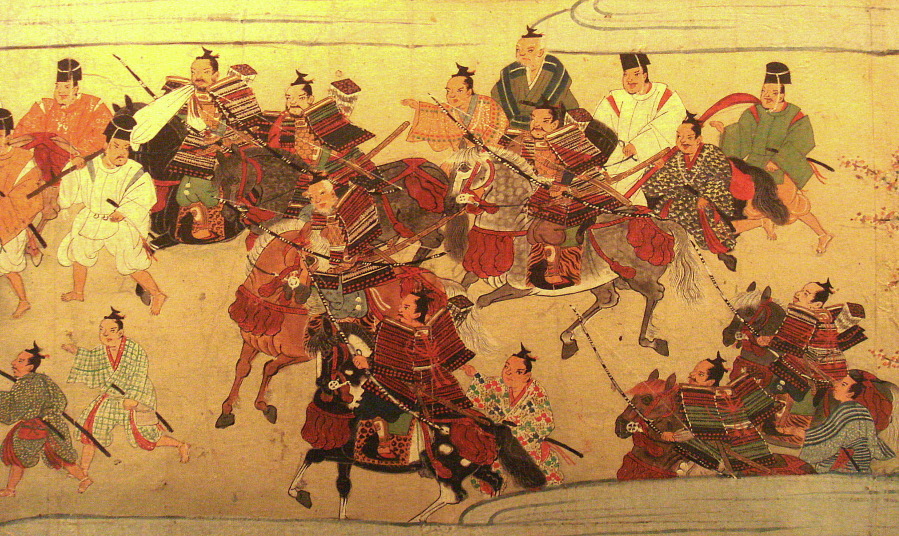
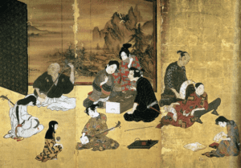
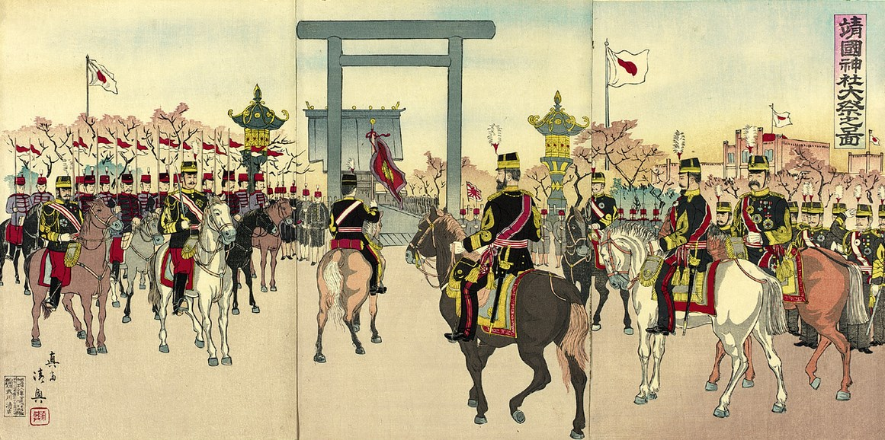

Explora a envolução da classe samurai desde o Período Heian até ao Período Meiji.

Surgimento dos primeiros samurais.
Serviço aos nobres e grandes proprietários.

Primeiro xogunato.
Consolidação da classe samurai.

Conflitos internos.
Crescimento do poder dos daimyõ.

Era das guerras civis.
Oda Nobunaga.
Toyotoi Hideyoshi.
Tokugawa leyasu.

Paz sob o xogunato Tokugawa.
Desenvolvimento do Bushidõ.

Fim dos Samurais.
Modernização do Japão.